PubPol 779
Dichotomous Dependent Variables
Gerald R. Ford School of Public Policy
University of Michigan
August 27 & September 3, 2025
Preliminaries: Limited Dependent Variables
When \(y\) Has Limited Values
We often have cases where \(y\) is dichotomous or comes in nominal/ordinal categories.
In these cases, OLS can be problematic:
OLS gives continuous predicted values that may be hard to interpret.
OLS can give predicted values that lie outside the range of the dependent variable.
The effect of any \(x_i\) on the outcome may not be linear across its range.
Heterodskedasticity is pretty much automatic.
Maximum Likelihood Approaches
For dichotomous data, we have probit/logit which use different probability distributions but produce similar results
For nominal data (i.e. unordered categories), we can use multinomial logit or probit.
For ordinal data, we can use ordered logit or probit.
In general: interpretation is the key. It is much trickier than OLS; the coefficients do not directly tell us the magnitude of change.
Example: Bias in Policy Professionals
Banuri et al. (2018) study whether policy professionals are subject to cognitive biases.
e.g. confirmation bias, when people remember or prefer information that conforms to prior views.
The survey sample consists of employees in the World Bank and DFID selected randomly and recruited via email.
The survey contained an experiment that randomized participants into one of two scenarios.
The outcome variable, measured in each scenario, is dichotomous.
The Two Scenarios
Participants see the same data but the scenario differs:
Control group: a non-ideological scenario involving a study about the effectiveness of a skin cream.
Treatment group: study about the effects for the bottom 40% of the income distribution when localities raise the minimum wage.
Are people in the treatment group more likely to interpret the data incorrectly?
Due to ideological predisposition, people in the treatment group might be more inclined to see what they want in the results.
Some Details of the Experiment
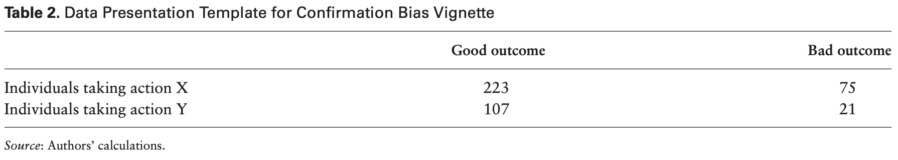
The same numbers were used in both cases, but the “Good outcome” and “Bad outcome” labels were randomized.
Above, the correct answer is that action Y is better, but this differs depending on the randomization.
The dependent variable is 1 if the person interprets the results correctly, and 0 otherwise.
Accuracy Higher in Skin Cream Scenario
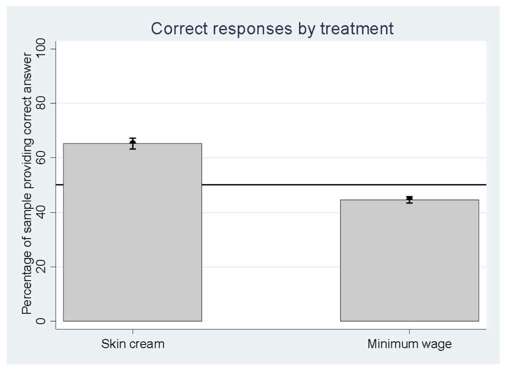
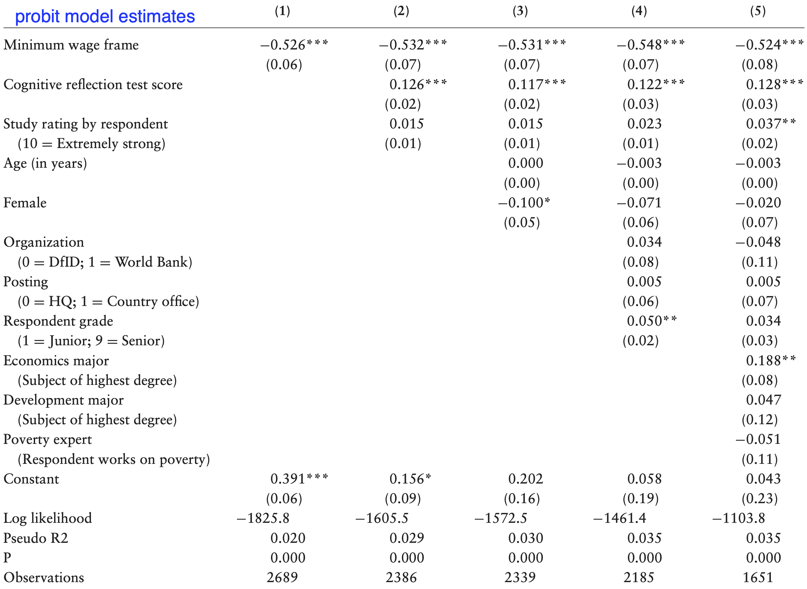
Digging In: Dichotomous Dependent Variables
Dichotomous Data: Linear Probability Model
Actually, we could just use OLS despite a dichotomous \(y\).
\[\begin{align*} \mathop{\mathrm{E}}[y_i|\mathbf{x_i}] & = [1 \times \mathop{\mathrm{Pr}}(y_i = 1|\mathbf{x_i})] + [0 \times \mathop{\mathrm{Pr}}(y_i = 0)|\mathbf{x_i}]\\ & = \mathop{\mathrm{Pr}}(y_i = 1|\mathbf{x_i}) \end{align*}\]
We can rewrite the expected value of \(y_i\) given \(\mathbf{x_i}\) as:
\[\begin{equation*} \mathop{\mathrm{Pr}}(y_i = 1|\mathbf{x_i}) = \mathbf{x_i}\boldsymbol{\beta} \end{equation*}\]
Where \(\mathbf{x_i}\) is a \(1 \times k\) row vector from the matrix \(\mathbf X\), and \(\boldsymbol{\beta}\) is a \(k \times 1\) column vector.
Example: Single Independent Variable
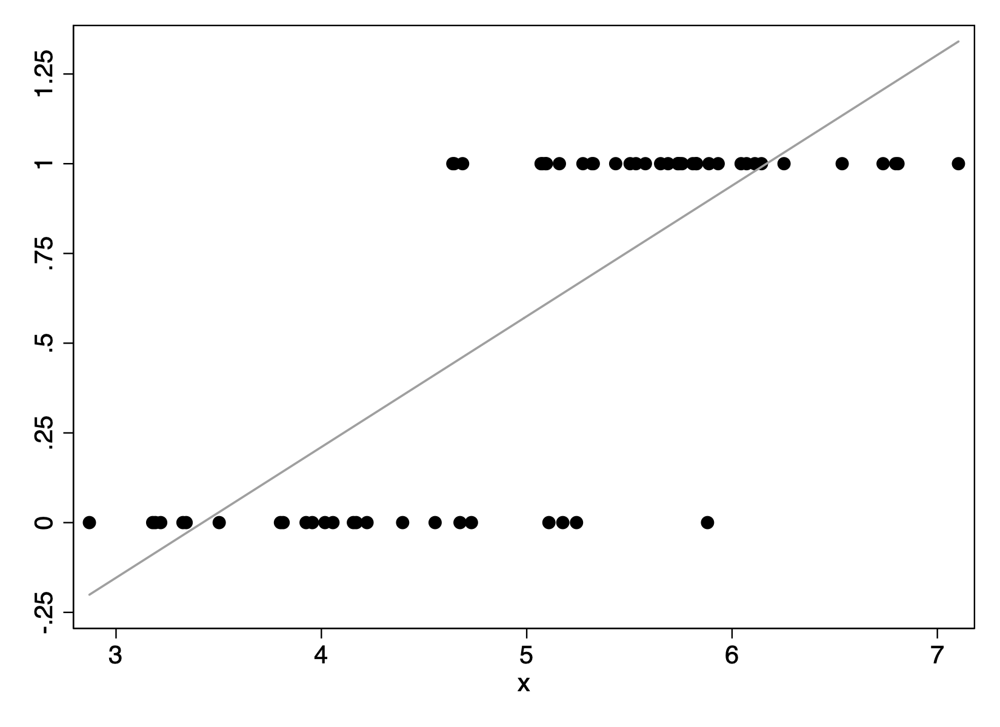
Interpretation
The interpretation is similar to OLS. Each one-unit increase in \(x\) leads to a \(\beta\)-sized change in the probability that \(y\) equals 1.
Problem: it’s unrealistic that \(x\) has the same, linear effect on \(\mathop{\mathrm{Pr}}(y_i = 1)\) regardless of its starting level.
- the estimated effect of \(x\) is biased for some values of \(x\).
Problem: predictions outside the boundaries of 0 and 1 are possible.
Problem: heteroskedasticity in the prediction errors. The errors are not normal, either.
Generalization to Multiple Independent Variables
\[\begin{align*} \mathop{\mathrm{Pr}}(y_i = 1|\mathbf{x_i}) & = \mathbf{x_i}\boldsymbol{\beta}\\ & = \beta_{0} + \beta_{1}x_{1} + \ldots + \beta_{k-1}x_{k-1} %+ \epsilon_i \end{align*}\]
Everything is the same. The inner product \(\mathbf{x_i}\boldsymbol{\beta}\) is a scalar.
We can interpret each \(\beta_{k}\) as the predicted change in the probability that \(y_{i} = 1\) associated with a one-unit change in \(x_{k}\).
All the same problems are still present.
Example: 2020 Presidential Election Choice
From the 2020 American National Election Study. The dependent variable, VotedBiden, equals 1 if the person voted for Biden and 0 if the person voted for another candidate.
PoliticalNews: how closely person follows political news (0-3).
Ideology: scale from 0 (extremely liberal) to 6 (extremely conservative).
FauciTherm: feeling thermometer for Dr. Anthony Fauci (0-100).
BLMtherm: feeling thermometer for Black Lives Matter (0-100).
BAplus: person has a BA degree (1=yes; 0=no).
Example: Biden Vote LPM
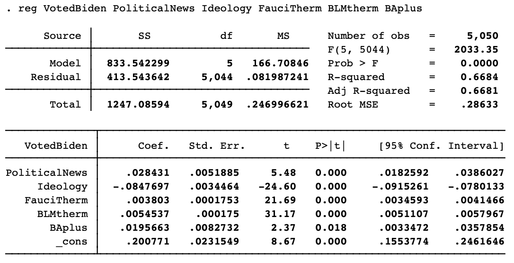
Predictions Outside the Boundaries
Note that the predicted values of \(y\), which can be interpreted as the probability of voting for Biden, range beyond 0 and 1.
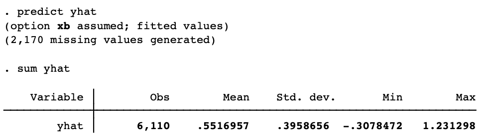
This is not optimal, but it’s not a huge problem either. We could just impose bounds on these extreme predictions.
In Defense of the LPM
The coefficients are easy to interpret and explain.
There are scenarios where a probit/logit cannot be estimated but an LPM can:
- e.g. when an independent dummy variable is perfectly correlated with the outcome.
Standard errors in a logistic model can be too small.
The LPM Works Well in RCT Setup
In an RCT with a dichotomous outcome, the LPM provides a consistent estimator of the average treatment effect. \[\begin{equation*} y = \beta_{0} + \beta_{1}T + \beta_{2}x \end{equation*}\]
In the above, both \(y\) and \(T\) are dichotomous, and \(\beta_{1}\) is the estimated treatment effect.
Linearity doesn’t matter, since \(T\) has only two values. Also, \(x\) is uncorrelated with \(T\) due to random assignment.
In this setup, the marginal effect of \(T\) on average across the range of \(x\) is the same as in a probit/logit model.
An S-curve Offers Better Fit in Other Scenarios
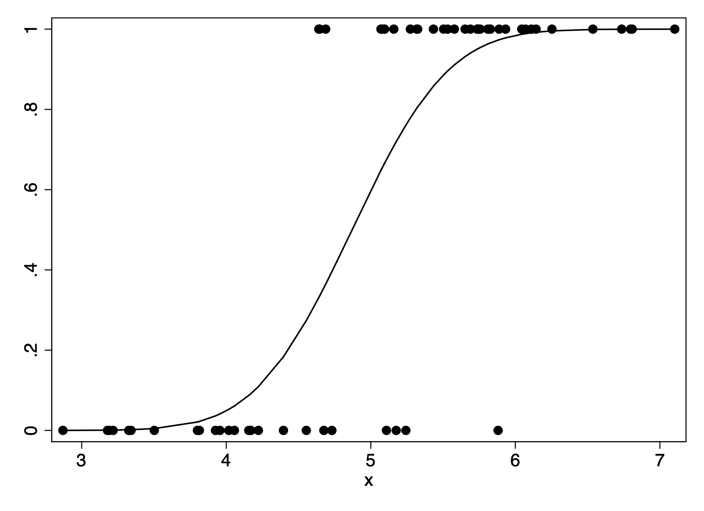
Binary Response Models: Probit and Logit
These techniques use an S-shaped curve that is bounded between 0 and 1 to fit the data.
Probit: based on the cumulative normal distribution.
Logit: based on the cumulative logistic distribution.
In both, we think of the observed, dichotomous \(y\) as being generated by a latent, continuous variable \(y^{*}\).
\[\begin{equation*} y_{i}=\begin{cases} 1 & \text{if } y^{*}_{i} > \tau \\ 0 & \text{if } y^{*}_{i} \leq \tau \end{cases} \end{equation*}\]
These are called link functions because they link \(y^{*}\) to \(y\).
Choosing the Distribution Function
\[\begin{equation*} y_{i}^{*} = \mathbf{x_{i}}\boldsymbol{\beta}+ \epsilon_{i} \end{equation*}\]
There aren’t strong reasons to choose probit over logit or vice-versa. They yield equivalent results.
In both, we model \(y_{i}^{*}\) as a linear function of the \(x_i\)’s.
With probit, we assume standard normal errors: \(\epsilon_{i} \sim N(0,1)\)
With logit, we assume logistic errors: \(\epsilon_{i} \sim \lambda(0,\frac{\pi^2}{3})\)
- Logit has slightly fatter tails due to the greater variance.
Probit Analysis
Probit: Cumulative Normal Density Function
\[\begin{equation*}
\Phi(\epsilon) = \int_{-\infty}^{\epsilon} \frac{1}{\sigma \sqrt{2\pi}} \exp \left(-\frac{(t - \mu)^{2}}{2\sigma^{2}} \right) dt
\end{equation*}\]
which, since we assume \(\mu = 0\) and \(\sigma =1\), simplifies to:
\[\begin{equation*}
\Phi(\epsilon) = \int_{-\infty}^{\epsilon} \frac{1}{\sqrt{2\pi}} \exp \left(-\frac{t^{2}}{2} \right) dt
\end{equation*}\]
Here we use the cumulative normal density to get the area under the normal distribution up to \(\epsilon\).
Normal Density vs. Cumulative Normal
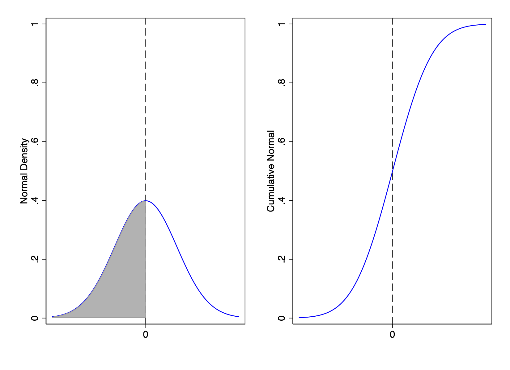
Connection to Using a z-table
You should be familiar with looking up the area under the normal above/below some \(z\) score.
The cumulative standard normal density function gives the proportion of area below a \(z\) score.
This function evaluated at 0 is .5.
This function evaluated at 1.96 is .975.
Cumulative Normal Density Function
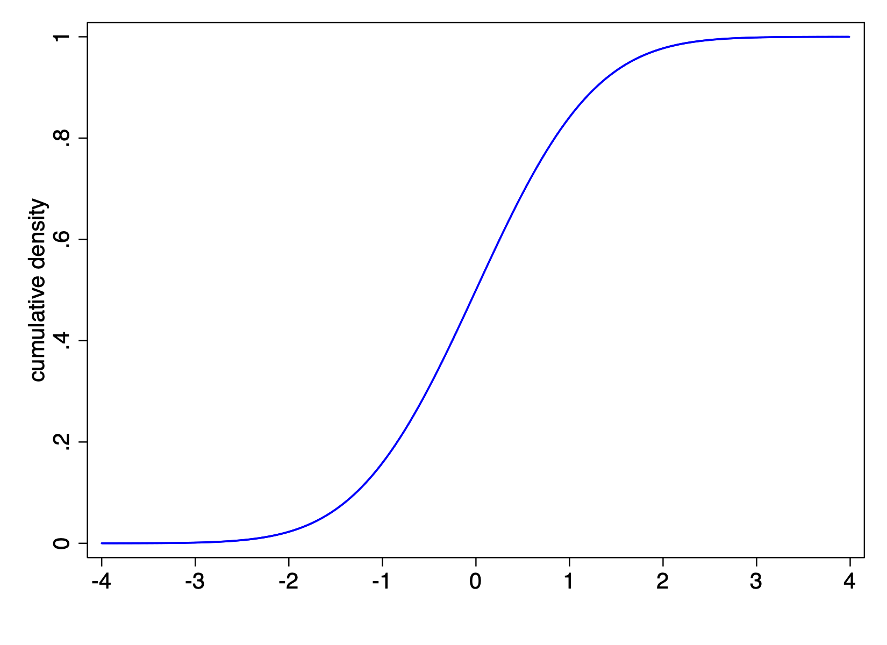
The Latent Variable \(y^{*}\)
\(y^{*}\) is a linear function of the observed \(x\)’s:
\[\begin{equation*} y_{i}^{*} = \mathbf{x_{i}}\boldsymbol{\beta}+ \epsilon_{i} \end{equation*}\]
There is some threshold value of \(y^{*}\) above which \(y_{i}\) equals 1: \[\begin{equation*} y_{i}=\begin{cases} 1 & \text{if } y^{*}_{i} > \tau \\ 0 & \text{if } y^{*}_{i} \leq \tau \end{cases} \end{equation*}\]
We think of \(y_{i}^{*}\) as being determined by \(\mathbf{x_{i}}\boldsymbol{\beta}\) plus a stochastic component. The realization of \(y_i\) is thus probabilistic to some degree.
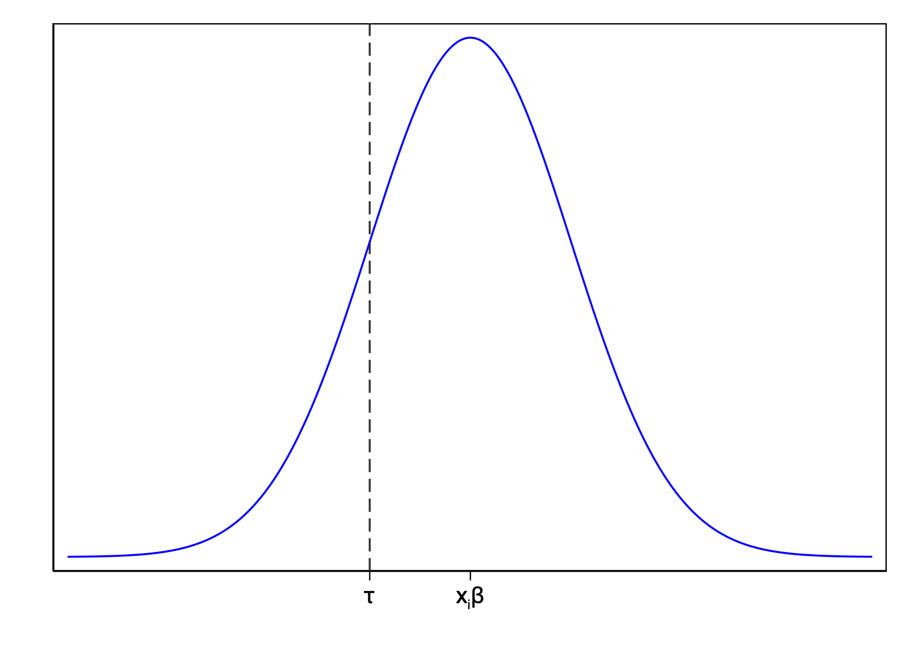
Since \(y_{i}^{*} = \mathbf{x_{i}}\boldsymbol{\beta}+ \epsilon_{i}\), there is some probability that \(y_i^* < \tau\) once \(\epsilon_i\) is added on.
We can use the fact that \(\epsilon\) is assumed to have a standard normal distribution to find the area above/below the threshold.
Probit Analysis
We use the latent variable \(y^{*}\) and the cumulative normal density to calculate \(\mathop{\mathrm{Pr}}(y_{i} = 1 | \mathbf{x_{i}})\), setting \(\tau = 0\). \[\begin{align*} \mathop{\mathrm{Pr}}(y = 1 | \mathbf x_{i}) & = \mathop{\mathrm{Pr}}(y^{*} > 0 | \mathbf x_{i})\\[.2em] & = \mathop{\mathrm{Pr}}(\mathbf{x_{i}}\boldsymbol{\beta}+ \epsilon > 0 | \mathbf x_{i})\\[.2em] & = \mathop{\mathrm{Pr}}(\epsilon > -\mathbf{x_{i}}\boldsymbol{\beta}| \mathbf x_{i})\\[.2em] & = \mathop{\mathrm{Pr}}(\epsilon \leq \mathbf{x_{i}}\boldsymbol{\beta}| \mathbf x_{i})\\[.2em] & = \Phi(\mathbf{x_{i}}\boldsymbol{\beta}) \end{align*}\] The probability that \(y_{i}=1\) is given by the cumulative normal distribution evaluated at the value \(\mathbf{x_{i}}\boldsymbol{\beta}\).
Illustration
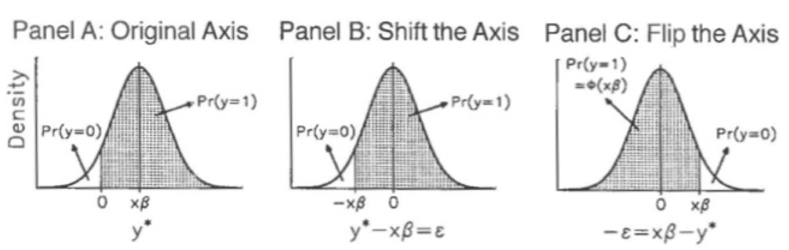
Probit: Maximum Likelihood Estimation
Let \(p_{i}\) be the probability of observing the value of \(y_{i}\) we observed: \[\begin{equation*} p_{i}=\begin{cases} \mathop{\mathrm{Pr}}(y_{i}=1 | \mathbf{x_{i}}) & \text{if } y_{i}=1 \\ 1- \mathop{\mathrm{Pr}}(y_{i}=1 | \mathbf{x_{i}}) & \text{if } y_{i}=0 \end{cases} \end{equation*}\]
The likelihood function is thus: \[\begin{equation*} L(\boldsymbol{\beta}| \mathbf{y}, \mathbf{X}) = \prod_{i=1}^{N}p_{i} \end{equation*}\]
We multiply together the respective probabilities of each observed \(y_{i}\)
Log Likelihood Function
\[\begin{align*} L(\boldsymbol{\beta}| \mathbf{y}, \mathbf{X}) & = \prod_{i=1}^{N}p_{i}\\ & = \prod_{y=1}\mathop{\mathrm{Pr}}(y_{i} =1|\mathbf{x_{i}}) \prod_{y=0}[1 - \mathop{\mathrm{Pr}}(y_{i} =1|\mathbf{x_{i}})]\\ & = \prod_{y=1} \Phi(\mathbf{x_{i}}\boldsymbol{\beta}) \prod_{y=0}[1 - \Phi(\mathbf{x_{i}}\boldsymbol{\beta})]\\ \end{align*}\]
Which makes the log likelihood function: \[\begin{equation*} \ln L(\boldsymbol{\beta}| \mathbf{y}, \mathbf{X}) = \sum_{y=1} \ln \Phi(\mathbf{x_{i}}\boldsymbol{\beta}) + \sum_{y=0}\ln[1 - \Phi(\mathbf{x_{i}}\boldsymbol{\beta})] \end{equation*}\]
Estimation of a Probit
The MLE finds the values of the parameters \(\boldsymbol{\beta}\) that maximize the given log likelihood.
We get a set of coefficients just like usual. The interpretation is different, however.
Stata:
probit y x1 x2 x3R:
model <- glm(y ~ x1 + x2 + x3, family = binomial(link = "probit"), data = mydata)
Stata Probit Example
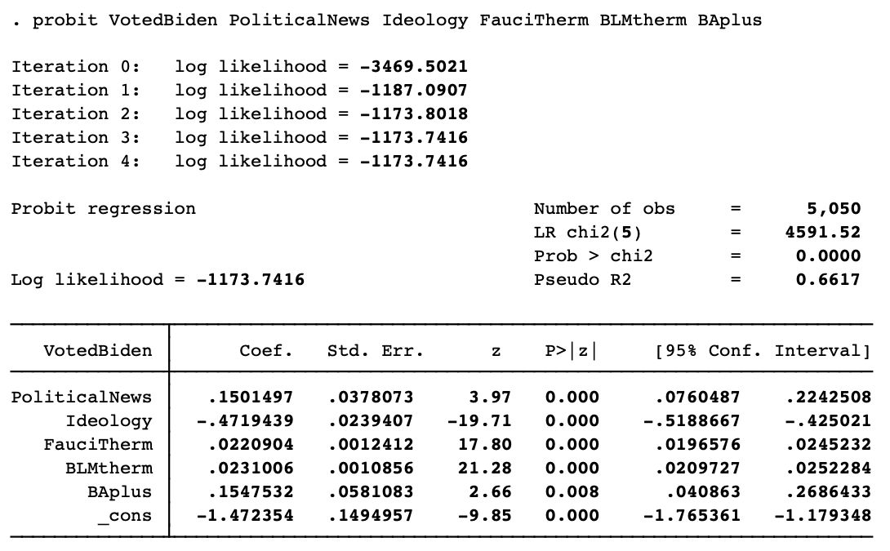
R Probit Example
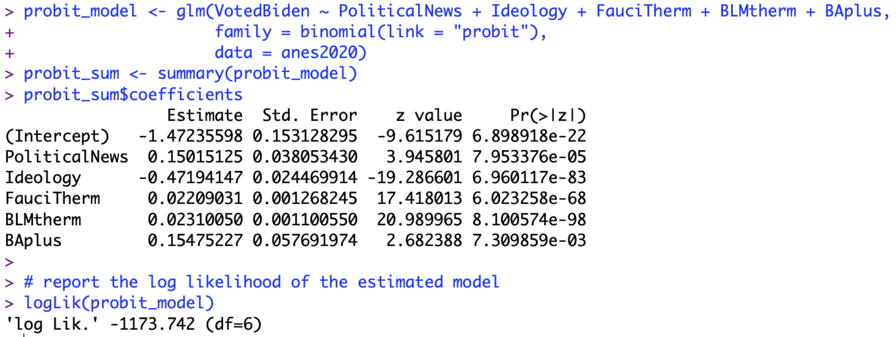
Interpretation of Coefficients
The sign of the coefficient indicates the direction of the relationship between the \(x\)’s and \(\mathop{\mathrm{Pr}}(y_i=1)\).
To understand the magnitude of the effect, we must determine by how much \(\Phi(\mathbf{x_i}\boldsymbol{\beta})\) changes in response to a particular \(x_i\).
This effect depends upon the values of all the variables in the analysis, since the starting point on the S-shaped curve matters.
There is no direct way to interpret the magnitude of the change in probability due to change in a single \(x_i\) without considering the values of the other \(x_i\)’s.
Different Ways to Interpret Probit Results
Predicted Probability. Calculate \(\mathop{\mathrm{Pr}}(y_i=1)\) given the values of the \(x\)’s for a particular case of interest.
Change in Predicted Probability. Calculate the change in \(\mathop{\mathrm{Pr}}(y_i=1)\) when \(x\)’s change from one set of values to another.
Marginal Effect. The predicted effect on \(\mathop{\mathrm{Pr}}(y_i=1)\) from changing one \(x_{i}\), starting at specified values for the \(x\)’s.
Average Marginal Effect. The average effect on \(\mathop{\mathrm{Pr}}(y_i=1)\) from changing one \(x_{i}\), calculated across all the cases in the sample.
- Each case is evaluated at its own values for the \(x\)’s.
Calculating a Predicted Probability
The probability of a vote for Biden is \(\Phi(\mathbf{x_i}\boldsymbol{\beta})\). If PoliticalNews=2, Ideology=3, FauciTherm=65, BLMtherm=60, and BAplus=1 then:
\[\begin{align*} \mathbf{x_i}\boldsymbol{\beta}& = -1.472 + .150(\text{PoliticalNews}) - .472(\text{Ideology})\\ & + .022(\text{FauciTherm}) + .023(\text{BLMtherm}) + .155(\text{BAplus})\\[.4em] & = -1.47 + .15(2) - .472(3) + .022(65) + .023(60) + .155(1)\\[.4em] & = .377 \end{align*}\]
To find the probability that a person with the above characteristics voted for Biden, evaluate using the cumulative normal distribution: \(\Phi(.377) = .65\).
Evaluating Cumulative Normal with Software
\(\Phi(\mathbf{x_i}\boldsymbol{\beta})\) is the area under the normal density up to the point \(\mathbf{x_i}\boldsymbol{\beta}\). We can find it in these ways:
Stata:
display normal(xB)R:
pnorm(xB)Excel:
=NORM.DIST(xB, 0, 1, TRUE)
Where xB is the value of the point we want to evaluate: \(\mathbf{x_i}\boldsymbol{\beta}\)
Commands for Predicted Values
The
marginscommand in Stata can calculate predicted probabilities or the value of \(\mathbf{x_i}\boldsymbol{\beta}\).The default option for
predictis the predicted probability. Addxbin the parentheses to get \(\mathbf{x_i}\boldsymbol{\beta}\) instead.margins, predict() at(var1=3 var2=10 var3=25)margins, predict(xb) at(var1=3 var2=10 var3=25)
The value of each independent variable must be specified. For each
var, you must use the name of a variable in the model.For R, the
marginaleffectslibrary provides thepredictionsfunction.
Use of Margins for Predicted Probabilites
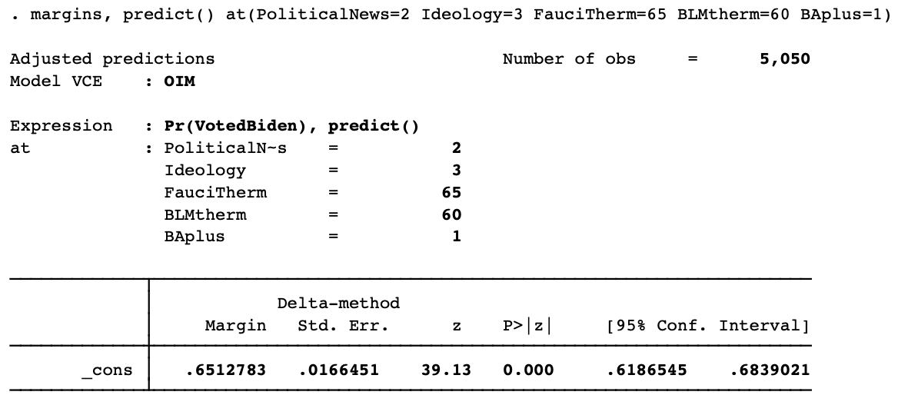
Use of Margins for \(\mathbf{x_i}\boldsymbol{\beta}\)
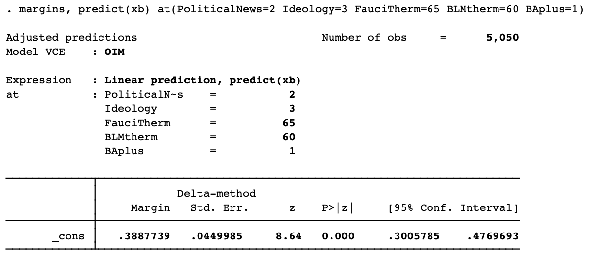
Predicted Probabilites in R
Using the predictions function from the marginaleffects library.
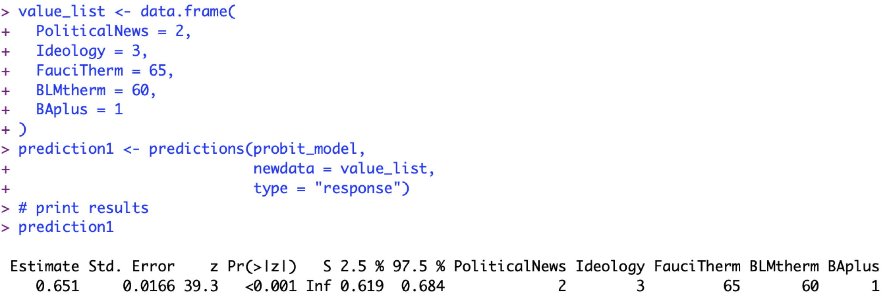
Obtain Predicted Probabilities for Each Case
In Stata, one can also obtain the predicted probabilities for each case in the sample with the
predictcommand.predict phatThis creates a new variable in the dataset called
phat. It contains the probability that each case is 1 on the dependent variable.In R, the
fitted.values()function gives predicted probabilities for each case in the sample.phat <- fitted.values(model)
Finding the Effect of \(\Delta x_k\)
Let the initial predicted value be \(\mathbf{x_{i}}\boldsymbol{\beta}\).
Then, by changing \(x_k\) to some new value, we can calculate \(\mathbf{\tilde{x}_{i}}\boldsymbol{\beta}\).
The predicted effect of the change in \(x_k\) on \(\mathop{\mathrm{Pr}}(y_i = 1)\) is given by: \[\begin{equation*} \Phi(\mathbf{\tilde{x}_{i}}\boldsymbol{\beta}) - \Phi(\mathbf{x_{i}}\boldsymbol{\beta}) \end{equation*}\]
The values of all the variables in the analysis are relevant.
Example
Previously we found that the probability of a Biden vote is .65. What if we change Ideology from 3 to 5?
\[\begin{align*} \mathbf{x_i}\boldsymbol{\beta}& = -1.472 + .150(\text{PoliticalNews}) - .472(\text{Ideology})\\ & + .022(\text{FauciTherm}) + .023(\text{BLMtherm}) + .155(\text{BAplus})\\[.1em] & = -1.47 + .15(2) - .472(5) + .022(65) + .023(60) + .155(1)\\[.1em] & = -.567 \end{align*}\]
Since \(\Phi(-.567) = .29\), we can calculate the effect of the change in Ideology like this: \[\begin{equation*}
\Phi(-.567) - \Phi(.377)= .29 - .65 \ = \ -.36
\end{equation*}\] The probability of a Biden vote falls by .36 to .29.
The Size of the Effect Depends
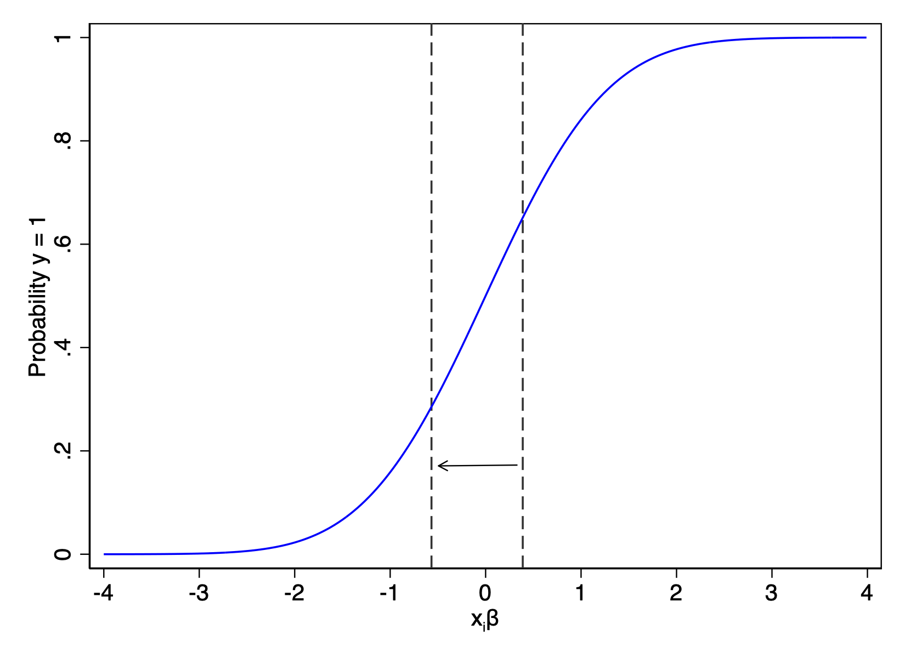
Predicted Probabilities Across Range of \(x_k\)
In Stata, we can use the
marginscommand to get predicted probabilities across the range of a variable.All the other variables must be set to some value.
The format is:
margins, predict() at(x1=2 x2=(2(1)10) x3=4)In this example, the variable \(x_2\) is set to range from 2 to 10 in increments of 1 unit.
Follow this command with the command
marginsplotto graph the results.
Predicted Probabilities Over a Range of \(x_k\)
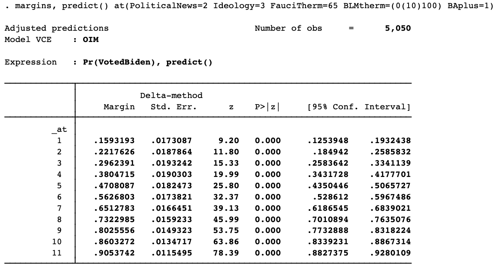
The Resulting Graph
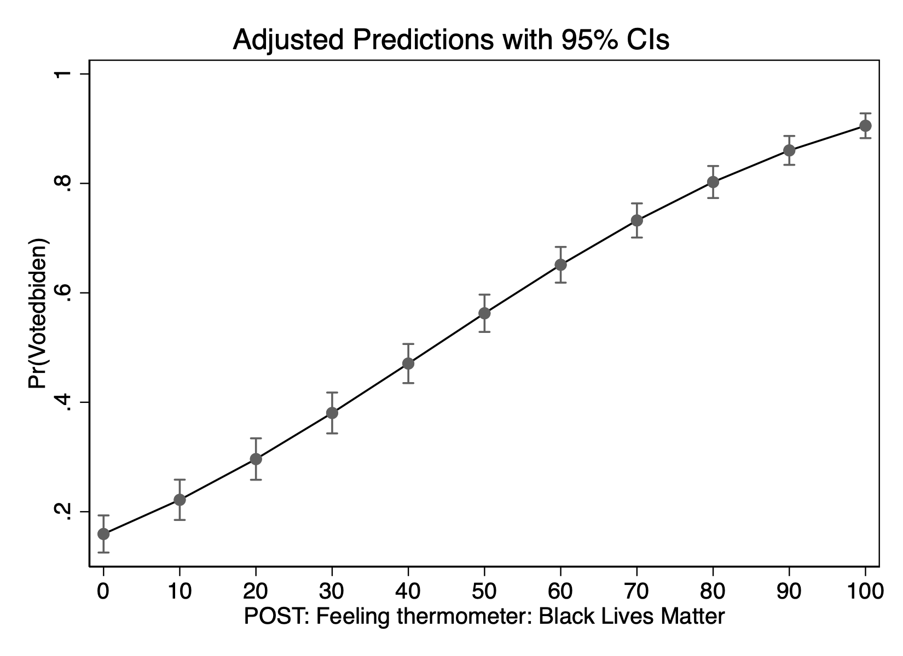
In R, using the marginaleffects library
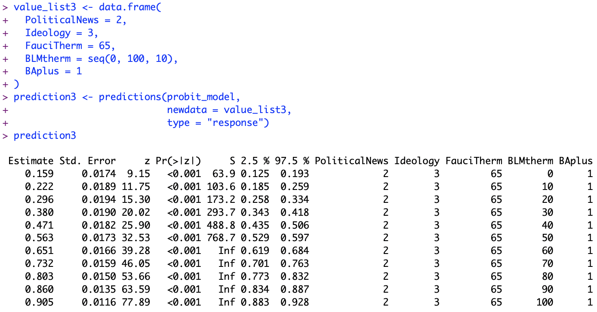
See the example code to make the marginsplot.
Marginal Effect of \(x_k\)
As with OLS, we can find the marginal effect of \(x_k\) by taking the derivative with respect to \(x_k\). \[\begin{equation*} \frac{\partial \mathop{\mathrm{Pr}}(y=1|\mathbf{x})}{\partial x_k} = \frac{\partial \Phi(\mathbf{x_i}\boldsymbol{\beta})}{\partial x_k} = \phi(\mathbf{x_i}\boldsymbol{\beta})\beta_k \end{equation*}\] where \(\phi(\mathbf{x_i}\boldsymbol{\beta})\) is the normal probability density function (note: this is not the cumulative density function!).
For the example case when
Ideology=3, \(\phi(.377)=.372\).Recall that the coefficient on
Ideologyis -.472.Since \((.372)(-.472) = -.176\), the marginal effect of a one-unit change in
Ideologyis about -.18 for \(x\)’s set at these values.
Commands for Normal Probability Density
For the marginal effect, we are not using the cumulative density function but just the standard normal probability density.
In other words, we want the height of the normal curve at \(\mathbf{x_i}\boldsymbol{\beta}\) rather than the area below \(\mathbf{x_i}\boldsymbol{\beta}\).
Stata:
display normalden(xB)R:
dnorm(xB, mean = 0, sd = 1)Excel:
=NORM.DIST(xb, 0, 1, FALSE)
Where xB is the value of the point that we want to evaluate: \(\mathbf{x_i}\boldsymbol{\beta}\)
Use of margins for a Marginal Effect
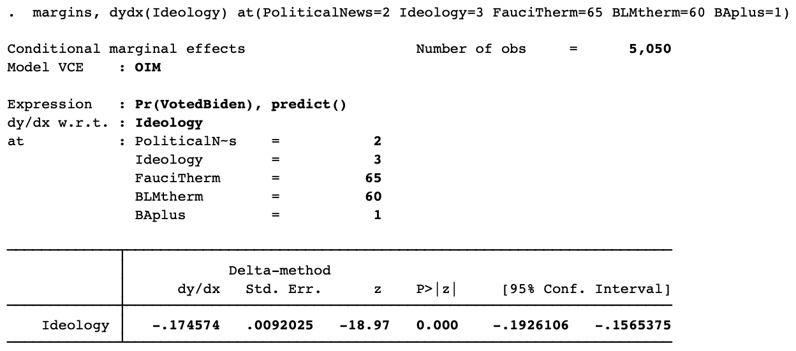
For R, see example code for the slopes() function in the marginaleffects library.
Marginal Effect Across Range of \(x_k\)
Crucially, since we have a non-linear model, the marginal effect of \(x_i\) changes as the value of \(x_k\) changes.
This is a key difference with OLS.
The
marginscommand can calculate these marginal effects across the range of \(x_k\) and then graph them withmarginsplot.margins, dydx(x2) at(x1=2 x2=(2(1)10) x3=4)marginsplot
Marginal Effects Across the Range of Ideology
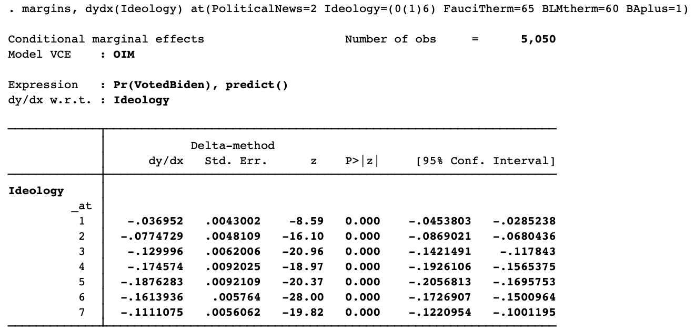
Marginal Effects Across the Range of Ideology
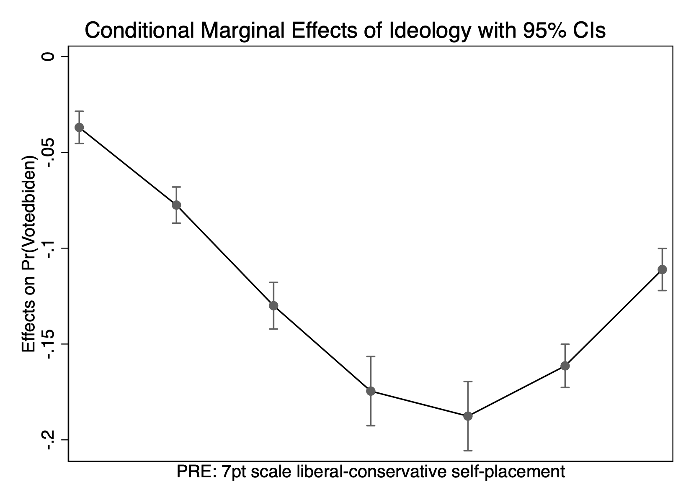
Marginal Effects Across the Range of Ideology
Using the marginaleffects library in R:
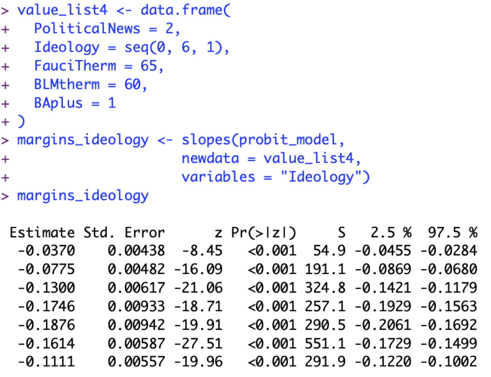
Average Marginal Effect of Ideology
This is the mean change in Pr(Biden) across the cases in the sample from increasing Ideology by 1, holding all else constant.
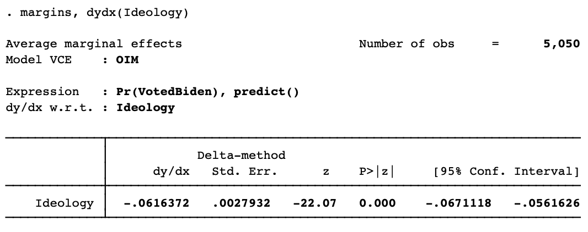
In R: avg_slopes(probit_model, variables = "Ideology")
Measures of Fit
In OLS, typical measures of the model’s fit include the \(F\)-statistic and the \(R^2\) statistic.
For probit analysis, the correlate to the \(F\)-test is a likelihood ratio (LR) test. The idea is the same: the null hypothesis is that all coefficients are zero.
The “pseudo-\(R^2\)” measure should be treated with caution. It’s not that useful a statistic.
What would be better? The percentage of cases predicted correctly. Use the
estatcommand.
The Likelihood Ratio (LR) Test
The test involves a comparison of the likelihood of the estimated model to the likelihood of a restricted model.
In the restricted model, the coefficients on the \(x_i\)’s are restricted to 0. This is an intercept-only model (Iteration 0 in the MLE).
A statistically significant increase in the likelihood in the unrestricted model means that the \(x_i\)’s have explanatory power. \[\begin{equation*} LR = -2 \ln\left(\frac{L_r}{L_{ur}}\right) = -2(\ln L_r - \ln L_{ur}) \end{equation*}\]
The LR statistic has a \(\chi^2\) distribution with degrees of freedom equal to the number of restricted coefficients.
\(LR = -2(\ln L_r - \ln L_{ur}) = -2(-3469.50 - (-1173.74)) = 4591.52\)

Pseudo-\(R^{2}\) is not a great measure of fit. Avoid it.
LR Test for Joint Significance
We can also use an LR test to determine whether two or more coefficients are jointly significant.
For the restricted model, obtain the final log likelihood of the model estimated without including these \(x_i\)’s.
For the unrestricted model, use the final log likelihood of the full model. \[\begin{equation*} LR = -2(\ln L_r - \ln L_{ur}) \end{equation*}\]
The LR statistic has a \(\chi^2\) distribution with degrees of freedom equal to the number of restricted coefficients.
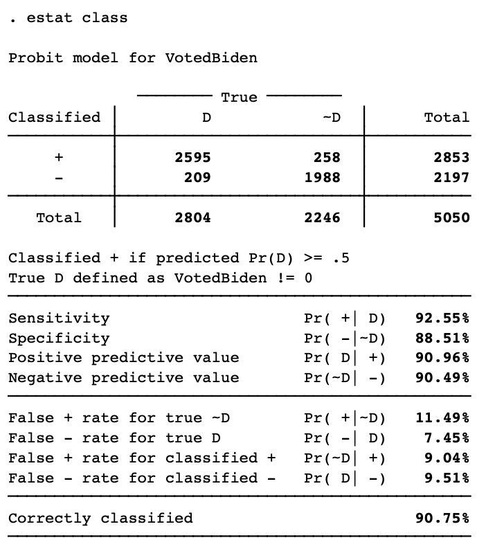
Logit Analysis
Logit Analysis
The setup is very similar to that of Probit analysis, but it uses the cumulative standard logistic distribution. \[\begin{equation*} \mathop{\mathrm{Pr}}(y_i = 1|\mathbf{x_{i}}) = \Lambda (\mathbf{x_{i}}\boldsymbol{\beta}) = \frac{\exp(\mathbf{x_{i}}\boldsymbol{\beta})}{1 + \exp(\mathbf{x_{i}}\boldsymbol{\beta})} \end{equation*}\]
We assume \(\epsilon_i\) has a logistic distribution with mean 0 and variance \(\pi^{2}/3\).
\(\Lambda (\mathbf{x_{i}}\boldsymbol{\beta})\) gives the area up to the point \(\mathbf{x_{i}}\boldsymbol{\beta}\) in the cumulative standard logistic distribution.
Normal vs. Logistic Densities
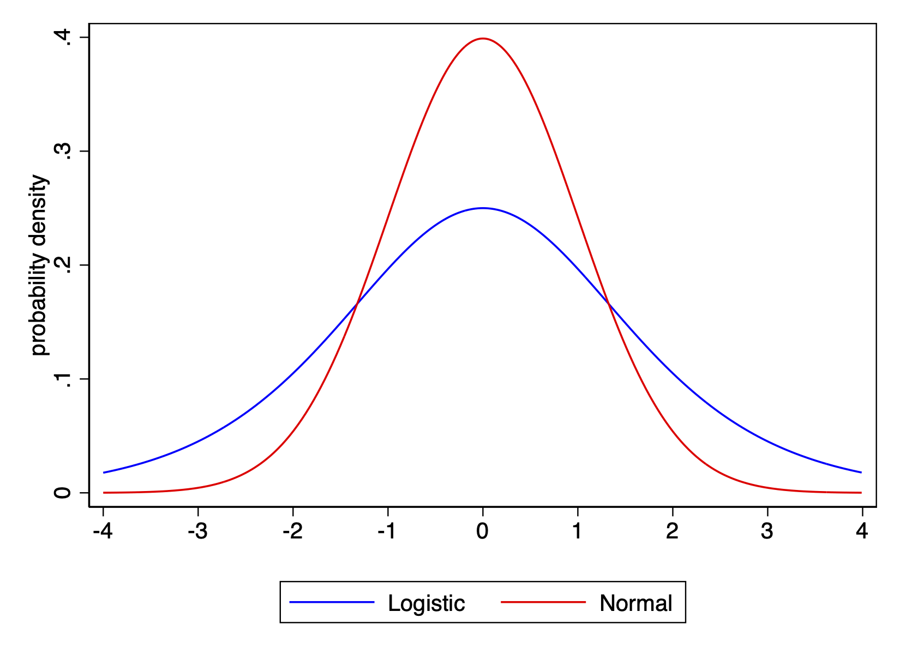
Cumulative Normal vs. Cumulative Logistic
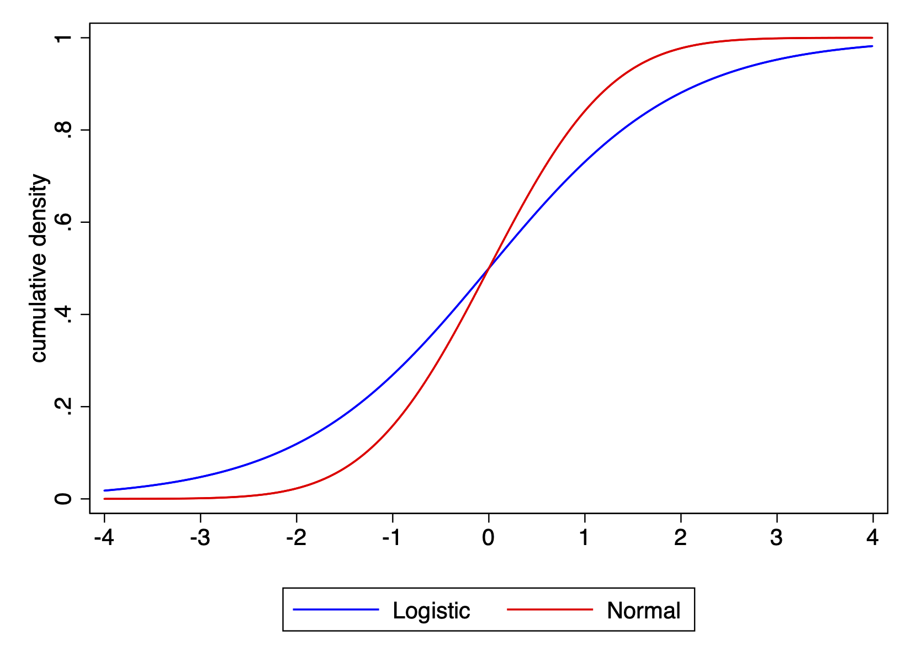
Basics of Logit
An odds ratio is the probability of an outcome divided by its complement (i.e. the probability that it will not happen).
Logit uses the log of odds ratio for modeling \(y^*\) \[\begin{equation*} \ln \left(\frac{p_i}{1-p_i}\right) = \mathbf{x_{i}}\boldsymbol{\beta}+ \epsilon_{i} \end{equation*}\]
The odds ratio is: \(\frac{p_i}{1-p_i}\). Taking the natural log makes it linear.
The coefficients thus give us changes in the log odds ratio. We can convert this into changes into predicted probabilities.
Math Note
Given that: \[\begin{align*} \mathbf{x_{i}}\boldsymbol{\beta}+ \epsilon_{i} & = \ln \left(\frac{p_i}{1-p_i}\right)\\ \exp(\mathbf{x_{i}}\boldsymbol{\beta}+ \epsilon_{i}) & = \frac{p_i}{1-p_i} \end{align*}\] Then, \[\begin{align*} \frac{\exp(\mathbf{x_{i}}\boldsymbol{\beta})}{1 + \exp(\mathbf{x_{i}}\boldsymbol{\beta})} & = \frac{\frac{p_i}{1-p_i}}{1 + \frac{p_i}{1-p_i}} \ = \ \frac{\frac{p_i}{1-p_i}}{\frac{1-p_{i}}{1-p_{i}} + \frac{p_i}{1-\hat{p}_i}} \ = \ \frac{\frac{p_i}{1-p_i}}{\frac{1}{1-p_i}} \ = \ p_{i}\\ \end{align*}\]
Estimating Logit Models
Stata:
logit y x1 x2 x3R:
model <- glm(y ~ x1 + x2 + x3, family = binomial(link = "logit"), data = mydata)R: the function
plogis(w)gives the cumulative logistic distribution at point \(w\).
Logit Results from Same Example
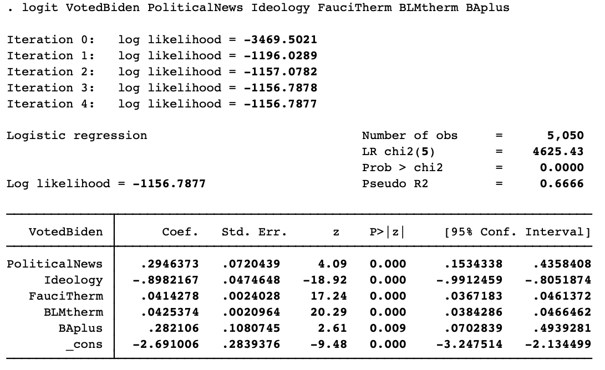
Example Interpretation (Logit)
The probability of a vote for Biden is \(\Lambda(\mathbf{x_i}\boldsymbol{\beta})\). If PoliticalNews=2, Ideology=3, FauciTherm=65, BLMtherm=60, and BAplus=1: \[\begin{align*}
\mathbf{x_i}\boldsymbol{\beta}& = -2.691 + .295(\text{PoliticalNews}) - .898(\text{Ideology})\\
& + .041(\text{FauciTherm}) + .043(\text{BLMtherm}) + .282(\text{BAplus})\\[.4em]
& = -2.269 + .295(2) - .898(3) + .041(65) + .043(60) + .281(1)\\[.4em]
& = .733
\end{align*}\]
Finally, evaluate using the cumulative logistic distribution: \(\Lambda(.733) = .68\). Recall that for probit it was .65.
Predicted Probabilities in More Detail
Let \(\mathbf{x_i}\boldsymbol{\beta}= \beta_{0} + \beta_{1} x_{1} + \beta_{2}x_{2}\) \[\begin{align*} \Lambda(\mathbf{x_i}\boldsymbol{\beta}) & = \Lambda(\beta_{0} + \beta_{1} x_{1} + \beta_{2}x_{2})\\[.75em] & = \frac{\exp(\beta_{0} + \beta_{1} x_{1} + \beta_{2}x_{2})}{1 + \exp(\beta_{0} + \beta_{1} x_{1} + \beta_{2}x_{2})} \end{align*}\]
Finding the Effect of \(\Delta x_k\)
Quite similar to probit, the predicted effect of the change in \(x_k\) on \(\mathop{\mathrm{Pr}}(y_i = 1)\) is given by: \[\begin{equation*} \Lambda(\mathbf{\tilde{x}_{i}}\boldsymbol{\beta}) - \Lambda(\mathbf{x_{i}}\boldsymbol{\beta}) \end{equation*}\]
The values of all the variables in the analysis are relevant.
Example
Previously we found that the probability of a Biden vote is .68. What if we change Ideology from 3 to 5? \[\begin{align*}
\mathbf{x_i}\boldsymbol{\beta}& = -2.691 + .295(\text{PoliticalNews}) - .898(\text{Ideology})\\
& + .041(\text{FauciTherm}) + .043(\text{BLMtherm}) + .282(\text{BAplus})\\[.4em]
& = -2.269 + .295(2) - .898(5) + .041(65) + .043(60) + .281(1)\\[.4em]
& = -1.063
\end{align*}\] Since \(\Lambda(-1.063)\)= .26, we can calculate the effect of the specified change in Ideology: \[\begin{equation*}
\Lambda(-1.063) - \Lambda(.733)= .26 - .68 \ = \ -.42
\end{equation*}\]
The probability of a Biden vote falls by .42 to .26.
Marginal Effect of \(x_k\)
\[\begin{equation*}
\frac{\partial \mathop{\mathrm{Pr}}(y=1|\mathbf{x_i})}{\partial x_k} = \frac{\partial \Lambda(\mathbf{x_i}\boldsymbol{\beta})}{\partial x_k} = \lambda(\mathbf{x_i}\boldsymbol{\beta})\beta_k
\end{equation*}\]
where \(\lambda(\mathbf{x_i}\boldsymbol{\beta})\) is the logistic probability density function. \[\begin{equation*}
\lambda(\mathbf{x_i}\boldsymbol{\beta}) = \frac{\exp(\mathbf{x_i}\boldsymbol{\beta})}{[1 + \exp(\mathbf{x_i}\boldsymbol{\beta})]^2}
\end{equation*}\]
For the example case: when Ideology=3, \(\lambda(.733)=.219\).
Since \((.219)(-.898) = -.20\), the marginal effect of Ideology is -.20 when the \(x\)’s are set to the stated values.
Interpretation with Odds Ratios
The logit model can be written such that: \[\begin{equation*}
\ln \Omega(x) = \mathbf{x_i}\boldsymbol{\beta}
\end{equation*}\]
where \(\Omega(x)\) is the odds of an event given \(x\): \[\begin{equation*}
\Omega(x) = \frac{\mathop{\mathrm{Pr}}(y=1|x)}{\mathop{\mathrm{Pr}}(y=0|x)}
\end{equation*}\]
\(\ln \Omega(x)\) is the thus the log of the odds ratio.
About Odds Ratios
| Probability | Odds | Logit |
| \(\pi\) | \(\frac{\pi}{1-\pi}\) | \(\ln \frac{\pi}{1-\pi}\) |
| .01 | 1/99 = .0101 | -4.60 |
| .05 | 5/95 = .0526 | -2.94 |
| .10 | 1/9 = .1111 | -2.20 |
| .30 | 3/7 = .4286 | -0.85 |
| .50 | 5/5 = 1 | 0.00 |
| .70 | 7/3 = 2.332 | 0.85 |
| .90 | 9/1 = 9 | 2.20 |
| .95 | 95/5 = 19 | 2.94 |
| .99 | 99/1 = 99 | 4.60 |
Visual Representation
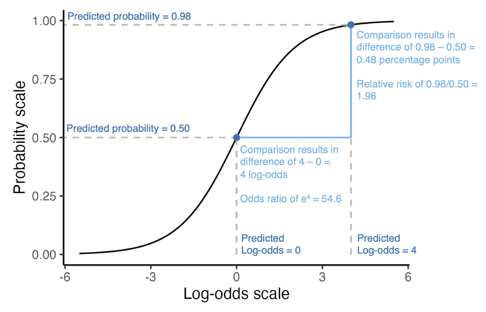
Interpretation with Odds Ratios
Since the model in linear in \(\beta_{k}\): \[\begin{equation*} \frac{\partial \ln \Omega(x)}{\partial x_{k}} = \beta_{k} \end{equation*}\]
A one-unit change in \(x_{k}\) is associated with a \(\beta_{k}\) change in the log odds ratio.
Thus, a one-unit change in \(x_{k}\) is associated with an \(\exp(\beta_{k})\) change in the odds ratio.
If \(\exp(\beta_{k}) >1\), the odds are \(\exp(\beta_{k})\) times larger. If \(\exp(\beta_{k}) <1\), the odds are \(\exp(\beta_{k})\) times smaller.
Logistic Regression
We can get the coefficients reported as the changes in the odds ratios using the
logisticcommand, rather thanlogit.In other words, where
logitgives us \(\beta_{k}\),logisticwill give us a coefficient that equals \(\exp(\beta_{k})\).If we use the
logisticcommand but add the optioncoef, we get the same coefficients as thelogitcommand.
Logistic Regression with Odds Ratios
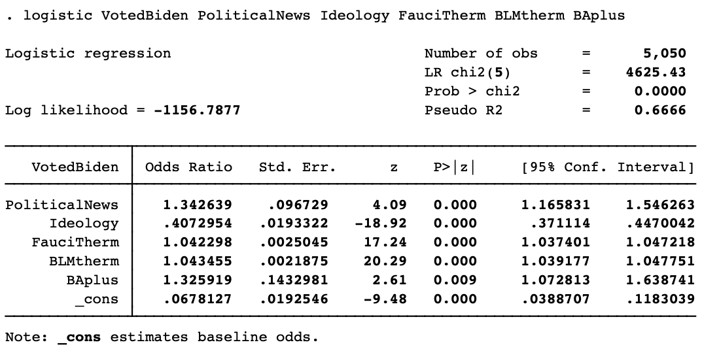
A one-unit increase in Ideology is associated with decreasing the odds of voting for Biden by a factor of .4073.
Key for Interpretation
Odds ratios can never be negative. Rather than be centered around 0, they are centered around 1.
Why? Because if a ratio is multiplied by 1, it does not change.
Thus, a variable has a negative effect on the odds of the outcome if the change in the ratio is less than 1.
A variable has a positive effect if the odds ratio changes by a factor greater than 1.
Example
Suppose the initial odds of a person voting for Biden are 7 to 3. That is an odds ratio of 2.333 and a probability of \(\frac{7}{7 + 3}\) or .70.
If Ideology increases by 1, the odds ratio would change by a factor of .4073, making it \((2.333)(.4073) = .9052\).
That’s odds of .9052 to 1, which is about .48 in probability terms: \[\begin{equation*} \frac{.9052}{.9052 + 1} \approx .48 \end{equation*}\]
Predicted probabilities are probably easier to interpret, but some disciplines (e.g. public health) tend to use odds ratios.
Advice
Within the same model, odds ratios do have some value in communicating relative risk for different groups.
Even in fields like health research, however, the use of odds ratios is under question (e.g. article by Norton et al.).
Odds ratios are not comparable across different models or studies.
Predicted probabilities and marginal effects are much more understandable to most audiences.
Concluding Points
With dichotomous dependent variables, both the LPM and probit/logit models have virtues.
Probit/logit models are better for unbiased predictions of marginal effects for specific hypothetical cases.
The LPM offers easier interpretation of coefficients.
When RCTs have a dichotomous DV, the LPM is just fine.